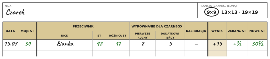
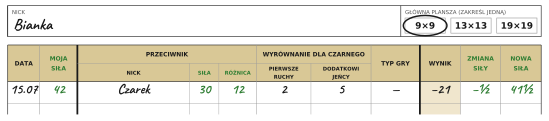

Każdy gracz klubu ma punkty siły — miarę tego, jak mocno aktualnie gra. Dzięki nim każda gra jest wyrównana: słabszy dostaje od silniejszego dodatkowe ruchy i kamienie, więc obie strony mają równe szanse — niezależnie od różnicy poziomów. Po każdej grze punkty siły się zmieniają, więc ranking sam znajduje Twoje miejsce i pokazuje postępy.
Przykładowa gra Czarka i Bianki — tak zapisali ją na swoich kartach graczy (dokładne zasady niżej):


Przed grą. Bianka (81 punktów siły na 9×9) gra z Czarkiem (60). Silniejsza Bianka gra Białymi, Czarek zaczyna Czarnymi. Różnica punktów siły to 81 − 60 = 21 — przed grą trzeba ją skompensować.
Wyrównanie. 13 z tych 21 punktów siły zamieniamy na dodatkowy ruch startowy dla Czarka — zagra dwa ruchy, zanim Bianka odpowie. Do skompensowania zostaje 8 punktów siły. Do tego komi: za przywilej pierwszego ruchu grający Czarnymi Czarek daje Biance 6 czarnych kamieni. Pozostałe do skompensowania 8 punktów siły Bianka spłaca kamieniami: oddaje otrzymane 6 czarnych i dopłaca 2 białe.
Po grze. Czarek wygrywa o 15 kamieni — wygrana o 13 lub więcej daje ±2 zamiast ±1. To zarazem jego czwarta wygrana z rzędu, więc zmiana zwycięzcy jest podwojona: +2 × 2 dla Czarka, −2 dla Bianki. Czarek 60 → 64 punkty siły, Bianka 81 → 79 punktów siły.
Karta gracza (PDF) — dziennik gier i punktów siły; do wydruku na A4.
Zasady
W tej samej kolejności, w jakiej liczy się grę przy stole.
1. Punkty siły
Każdy ma punkty siły — osobne dla każdej planszy: 9×9, 13×13 i 19×19. To trzy niezależne rankingi. Więcej punktów siły = silniejszy gracz.
| Poziom | 9×9 | 13×13 | 19×19 |
|---|---|---|---|
| początkujący | 40–60 | 120–180 | 260–390 |
| 20 kyu | 60 | 180 | 390 |
| 10 kyu | 80 | 240 | 520 |
| 1 dan | 100 | 300 | 650 |
Każdy stopień to mniej więcej 2 punkty siły na 9×9, 6 na 13×13 i 13 na 19×19.
Tabela służy do ustalenia początkowych punktów siły — jeśli znamy przybliżony poziom gracza w kyu / dan.
Potem liczy się już tylko to, co pokaże na planszy.
2. Kolory
Silniejszy gra Białymi, słabszy zaczyna Czarnymi. Przy równych punktach siły losujecie kolory — to jest nigiri.
3. Dodatkowe ruchy i komi
Policzcie różnicę punktów siły i skompensujcie ją przed grą — najpierw dodatkowymi ruchami, potem kamieniami.
3.1. Dodatkowe ruchy
Za każde pełne 13 punktów siły różnicy Biały daje Czarnemu dodatkowy ruch — Czarny zagrywa wtedy o jeden ruch więcej, zanim Biały odpowie.
3.2. Komi
Czarny daje Białemu 6 czarnych kamieni — komi za przywilej pierwszego ruchu.
Resztę różnicy Biały spłaca, oddając otrzymane czarne kamienie — po jednym za każdy punkt siły — a kiedy się skończą, dopłaca białymi kamieniami.
Otrzymane kamienie trzyma się do końca gry — przy liczeniu każdy to punkt.
4. Zmiana punktów siły
Gracie. Zwycięzca +1 punkt siły, przegrany −1 punkt siły.
Wygrana o 13 kamieni lub więcej albo przez poddanie: +2 i −2 punkty siły zamiast ±1.
Remis: punkty siły się nie zmieniają.
Trzecia wygrana z rzędu i każda kolejna: zmiana punktów siły zwycięzcy jest podwojona.
Notatki dla opiekuna
- Opiekun klubu może swobodnie korygować punkty siły każdego gracza — gdy widzi, że gracz wygrywa zbyt często, że jego punkty siły były źle ustalone, albo że robi postępy szybciej, niż ranking nadąża.
- Startowe punkty siły na jednej planszy można przeliczyć z innej — mają się do siebie jak 2 : 6 : 13 na 9×9 : 13×13 : 19×19. Np. 60 na 9×9 to 60 × 6/2 = 180 na 13×13 i 60 × 13/2 = 390 na 19×19.